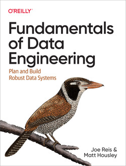

Review of Fundamentals of Data Engineering

In today’s data-informed world, effective data engineering is more important than ever. From managing and processing large amounts of data to ensuring its security and privacy, data engineers play a critical role in organizations of all sizes. If you’re interested in learning more about this field, Fundamentals of Data Engineering by Joe Reis and Matt Housley is a book worth checking out. In this blog post, I’ll be reviewing what I consider to be an excellent survey into the landscape of data engineering. It touches on everything from a high level and considers emerging trends in the field. While the book reads more as reference material than an educational book and the title may be misleading, I believe that it’s a valuable resource for anyone interested in data engineering. Let’s dive in!
Foundation and Building Blocks
Here they cover topics such as defining the data engineer role, an overview of the data engineering lifecycle, elements of a good architecture, and how to evaluate different technologies.
They define a good architecture with nine principles. And while no architecture is one-size-fits-all, often a loosely coupled, scalable, and fault-tolerant architecture works best. They warn that with cloud architecture, businesses need to pay close attention to FinOps. Essentially, the cost structure of data has evolved dramatically as we have moved to the cloud. Costs can quickly scale up or down as needed, however if not managed properly, data leaders will struggle to balance priorities, budgets, and efficiency.
I appreciated their balanced take on tech adoption by considering perspectives of speed to market, team size, interoperability, total cost of ownership, and opportunity cost to name a few. They recommend building a strong foundation of immutable tools and re-evaluating every two years for transitory tools. Immutable tools are components that underpin the cloud or languages that have stood the test of time. For example, Object Storage (ex: S3, Azure Blob), SQL, and Bash. You should structure any transitory tools around these immutables.
Depending on your experience in data engineering or even software engineering, these concepts are likely review. For example, they rehashed the monolith vs microservices argument.
The Data Engineering Lifecycle in Depth
The second section of Fundamentals of Data Engineering dives into the data engineering lifecycle. They devote a chapter to each of the five stages: generation, storage, ingestion, transformation, and serving. They argue that understanding this lifecycle is essential for effectively managing data engineering projects.

The authors do an excellent job of breaking down each stage and explaining its importance in the data engineering process. Especially if you’re new to data engineering, this section is a valuable resource for understanding each stage in the data engineering lifecycle.
Security, Privacy, and the Future of Data Engineering
As the amount of data being generated and stored continues to grow, ensuring its security and privacy is becoming increasingly important. With new laws like GDPR and CCPA, there are legal considerations too. The authors provide an overview of different areas to pay attention to such as people, processes, updating software, using encryption, logging and monitoring, and network access. They explain that data engineers need to be aware of these threats and keep them top of mind during decision making. To do this, they offer an example security policy with a short list of practical actions that organizations can take immediately.
Finally, the authors look towards the future of data engineering. They argue that the Data Engineering Lifecycle isn’t going away. But new, easy-to-use data tools will continue to abstract the complexity of large data systems. This will mean, data engineers will increasingly need to understand the big picture and incorporate “enterprisey” elements like data management, and governance. Additionally, they predict that titles and responsibilities will continue to morph as the boundaries between software engineering, data engineering, data science, and ML engineering become increasingly fuzzy. They argue that data engineers need to stay up-to-date with these trends and be prepared to adapt to new technologies and methodologies.
Fundamentals of Data Engineering
This book is a valuable resource for anyone interested in data engineering. The book provides a comprehensive overview of the field, covering everything from concepts to emerging trends.
I consider the title somewhat misleading because the book is more of a general overview of technologies concepts rather than a foundational understanding of data engineering. I suppose I was expecting more opinion on what to do for success. They talk about the pros and cons of different technologies, but because it often reads more like a technological dictionary, it is hard to understand when you should pick one technology over another. If you’re looking for a how-to, this book is not for you. But to be fair, they to call this out in their introduction.
I think the book would read better with a the occasional case study to understand contextually what problems these technologies are designed to solve. I understand this would increase the size of the book, but may shed light and provide context for those especially new to the field. Knowing what technologies are out there is less helpful than knowing when to use a technology for the problem at hand.
Nonetheless, it provides an excellent high-level introduction to data engineering concepts and technologies. The authors do a good job of categorizing various technologies into their data engineering lifecycle, making it easy to understand the process. Additionally, the book is a great resource for describing the landscape of data engineering and related concepts. Each chapter provides plenty of links for additional information, and I plan to re-read individual chapters to get a better understanding of a particular topic when needed.
Overall, I would recommend the book to others. As an experienced data scientist, none of the topics were particularly enlightening, but they were a good review and offered resources to delve deeper if needed.
Rating: ⭐⭐⭐⭐